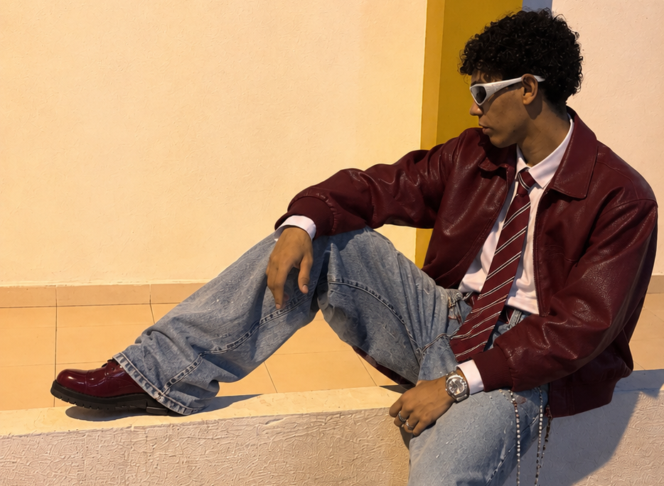

Mi progreso
En formacion.
Dar vistaso

Yo utilizo las herramientas de Adobe para crear y editar diferentes tipos de contenido. Por ejemplo, uso Photoshop para editar imágenes, Illustrator para diseñar logotipos, Premiere Pro para editar videos e InDesign para crear revistas y folletos. Estas herramientas me ayudan a desarrollar mi creatividad, mejorar mis diseños y realizar trabajos de manera más profesional.
Como estudiante de Integración de Contenidos Digitales, cuento con competencias para crear, diseñar y desarrollar contenidos digitales creativos e innovadores, utilizando herramientas tecnológicas y plataformas digitales. Tengo habilidades en diseño gráfico, edición de imágenes y videos, comunicación visual, creatividad, trabajo en equipo y solución de problemas, buscando transmitir mensajes de manera clara, atractiva y efectiva.
El Fondo Emprender SENA es un Fondo creado por el Gobierno Nacional para financiar proyectos empresariales provenientes de Aprendices, Practicantes Universitarios